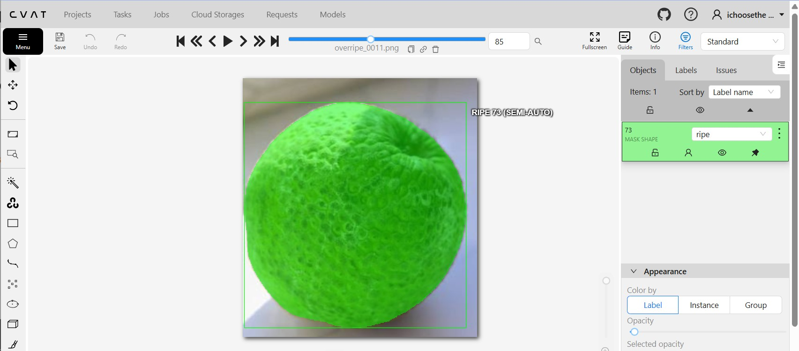
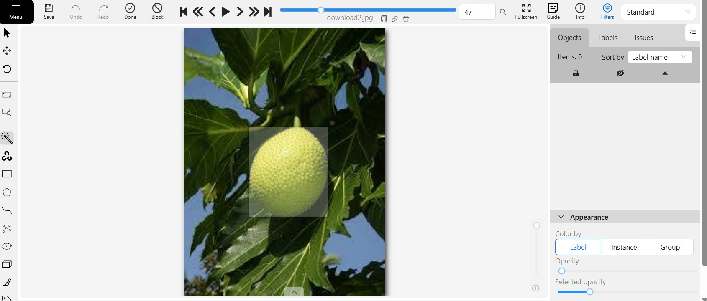
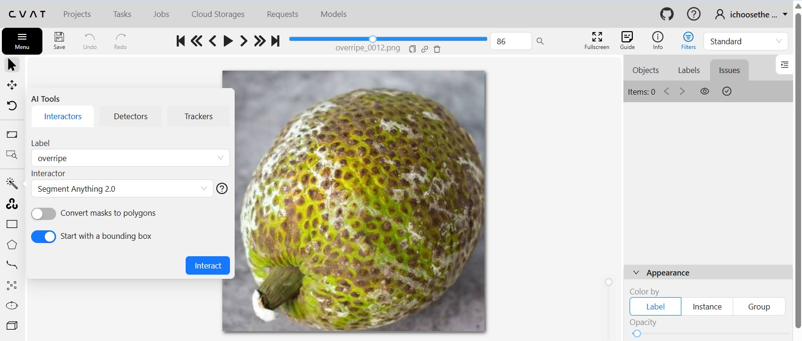
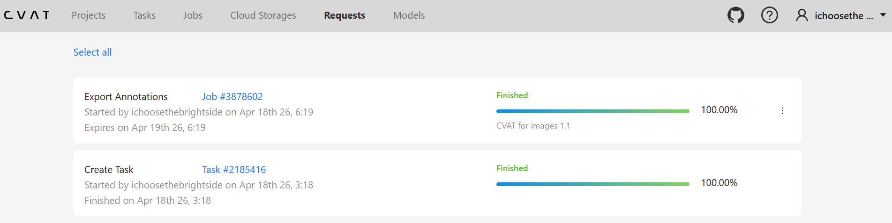
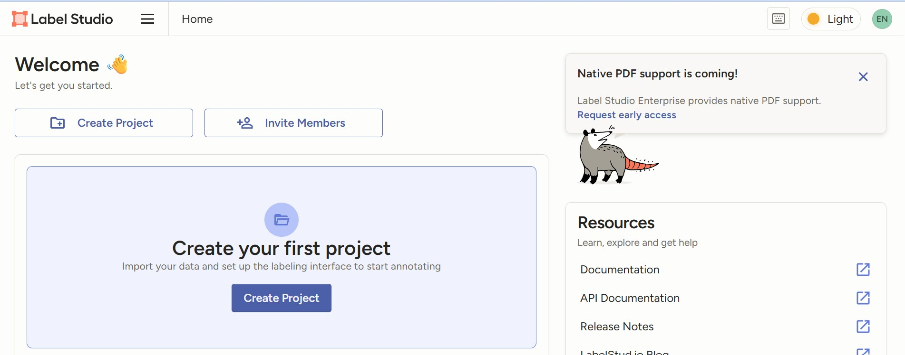
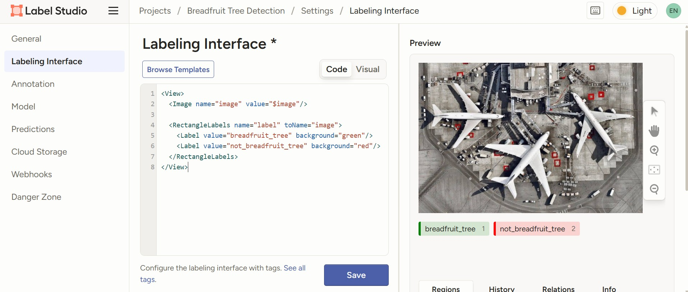
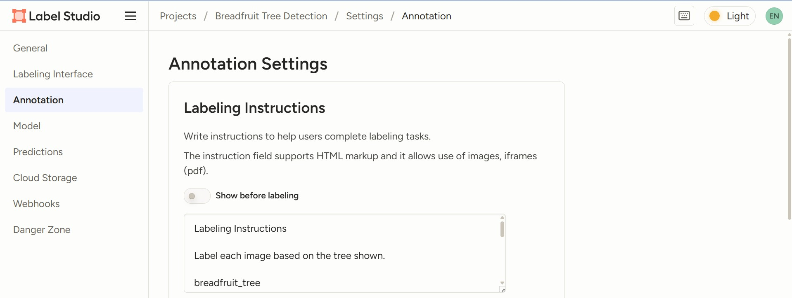
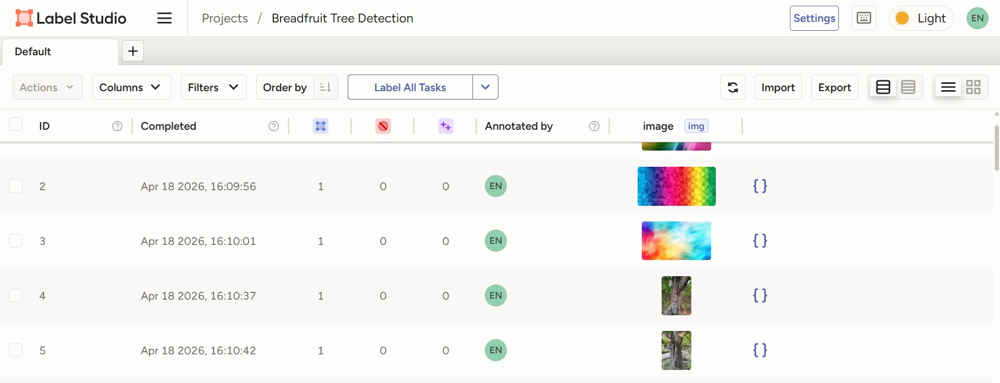
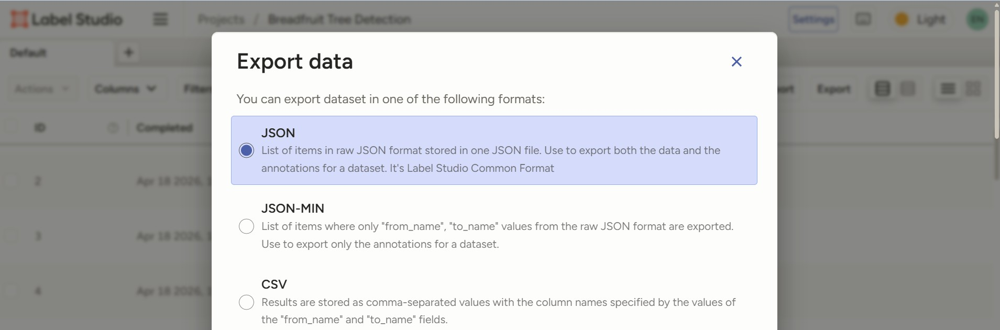

This case study showcases my experience in building annotated datasets for machine learning.
It includes both object detection and image classification workflows using industry tools such
as CVAT and Label Studio.
Machine learning models require high-quality labeled datasets. However, inconsistent annotation
and unclear labeling standards can lead to poor model performance. The goal of this project is to
create structured and reliable datasets for:
- Fruit ripeness detection (object detection)
- Breadfruit tree identification (image classification)
I implemented two annotation workflows using different tools:
- CVAT for bounding box annotation (object detection)
- Label Studio for image classification
Each dataset was labeled using clear annotation guidelines to ensure consistency and accuracy.
CVAT — Object Detection Workflow
Using CVAT, I created a dataset for fruit ripeness classification. Bounding boxes were applied
to identify and label fruits as ripe, unripe, or overripe.

Accurate bounding box annotation for ripe fruit.

Consistent labeling using rectangle tools.

Clear distinction of fruit condition.

Final dataset prepared for model training (YOLO format).
Label Studio — Image Classification Workflow
Label Studio was used to build a clean image classification dataset for identifying breadfruit trees.
Unlike CVAT (object detection), this workflow focuses on assigning a single label per image.
The goal was to classify images into two categories:
• breadfruit_tree
• not_breadfruit_tree
Label Studio Workflow Steps
Step 1: Project Creation
A new project was created in Label Studio and configured for image classification.

Step 2: Label Configuration
Defined classification labels:
• breadfruit_tree
• not_breadfruit_tree

Step 3: Dataset Upload
Uploaded images of breadfruit trees and other tree types into the project for annotation.

Step 4: Labeling Instructions
Each image was labeled based on visible tree characteristics. Only one label was assigned per image.

Step 5: Annotation Process
Images were manually reviewed and labeled using the classification interface to ensure accuracy and consistency across the dataset.
Step 6: Export Dataset
Final annotations were exported in JSON format for future machine learning use.


Correct classification based on identifiable leaf patterns and structure.

Different tree type labeled as not_breadfruit_tree.

Tree does not match breadfruit characteristics.

Unclear or different species classified conservatively.
- Collected and organized image datasets
- Defined labeling guidelines for consistency
- Annotated data using CVAT and Label Studio
- Validated annotations for accuracy
- Exported datasets in ML-ready formats (JSON, YOLO)
- Structured and consistent annotation datasets
- Ready for machine learning model training
- Demonstrated experience in multiple annotation tools
- Improved data quality through clear labeling standards